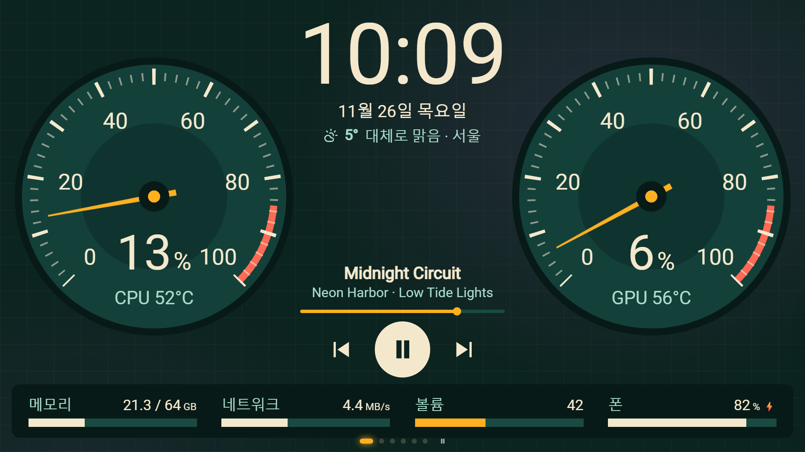

CPU·GPU 사용량, 재생 중인 음악, 날씨, Claude·Codex 사용량까지. 안드로이드 공기계를 모니터 옆에 세워 두고 한눈에 보세요. 연결은 QR 코드 한 번이면 끝, 개발자 옵션도 필요 없어요.
PC 프로그램 1.0.0 · Windows 10/11 · 계정·광고·사용 기록 수집 없음

처음 한 번만 하면 됩니다. 그다음부터는 PC와 공기계가 같은 Wi-Fi에 있으면 저절로 이어져요.
PhoneDash-Setup.exe를 받아 더블클릭하세요. 설치 폴더를 고를 필요 없이 바로 설치되고, 컴퓨터를 켤 때마다 자동으로 실행됩니다. 설치가 끝나면 연결 창이 바로 떠요.
“Windows의 PC 보호” 창이 뜨면 추가 정보 › 실행을 누르세요. 아직 코드 서명 인증서가 없는 프로그램이라 나오는 안내입니다. 방화벽 창이 뜨면 허용을 눌러 주세요. 공기계가 Wi-Fi로 PC에 들어오는 길입니다.
Google Play에서 폰대시를 설치하세요(무료). Android 7.0 이상이면 됩니다. PC 화면 왼쪽 QR을 공기계 카메라로 찍어도 설치 페이지가 열려요.
연결 창을 닫았다면 PC 설정 화면의 일반 › Wi-Fi & Tailscale › Wi-Fi로 폰 페어링에서 다시 열 수 있어요. Wi-Fi로 찾기는 이 창이 열려 있는 동안에만 됩니다.
위젯을 12 × 6 격자에 마음대로 배치하고, 페이지를 원하는 만큼 만드세요. 편집은 PC 브라우저에서 합니다.
CPU·GPU 사용률과 온도, 메모리, 디스크, 네트워크 속도, 무거운 프로세스까지 실시간으로.
PC에서 재생 중인 곡과 앨범 아트를 보고, 재생·볼륨을 폰에서 조절합니다.
Claude·Codex 사용 한도와 작업 상태, 승인 요청을 폰에서.
음악이 나오면 음악 페이지로, 자리를 비우면 시계로. 조건에 따라 화면이 바뀝니다.
앱 실행, 음소거, 화면 잠금 같은 버튼을 폰에 두고 한 번에.
계정도 서버도 없습니다. 패널 데이터는 집 안 Wi-Fi(암호화된 직접 연결) 또는 USB 케이블 안에서만 오갑니다.
USB 디버깅을 켜고 케이블로 연결하면 충전하면서 쓰고, PC를 켜면 공기계 화면도 저절로 켜져요.
PC 프로그램과 폰 앱 모두 무료예요. 무료로 모든 위젯과 페이지 1장, 버튼 8개를 쓸 수 있고, 페이지 여러 장·자동 전환 규칙·버튼 무제한·모든 테마가 필요하면 앱 안에서 Pro를 한 번 결제하면 돼요(구독 아님).
현재 정식 지원은 Windows 10/11입니다.
밤(기본 00:30~07:30)에는 화면을 아주 어둡게 하는 야간 모드가 켜져 있어요. Home Assistant로 제어하는 스마트 플러그가 있으면 PC 설정의 배터리 관리에서 충전을 일정 범위로 묶어 둘 수도 있습니다.
이용 통계는 폰 앱에서 동의한 경우에만 보내고 언제든 끌 수 있어요. 그 밖에는 날씨처럼 기능에 필요한 요청만 해당 서비스로 갑니다. 전체 목록은 개인정보처리방침에 있습니다.
Windows 설정 › 앱 › 설치된 앱에서 PhoneDash (폰대시)를 제거하세요. 설정 파일은 남겨 둡니다.